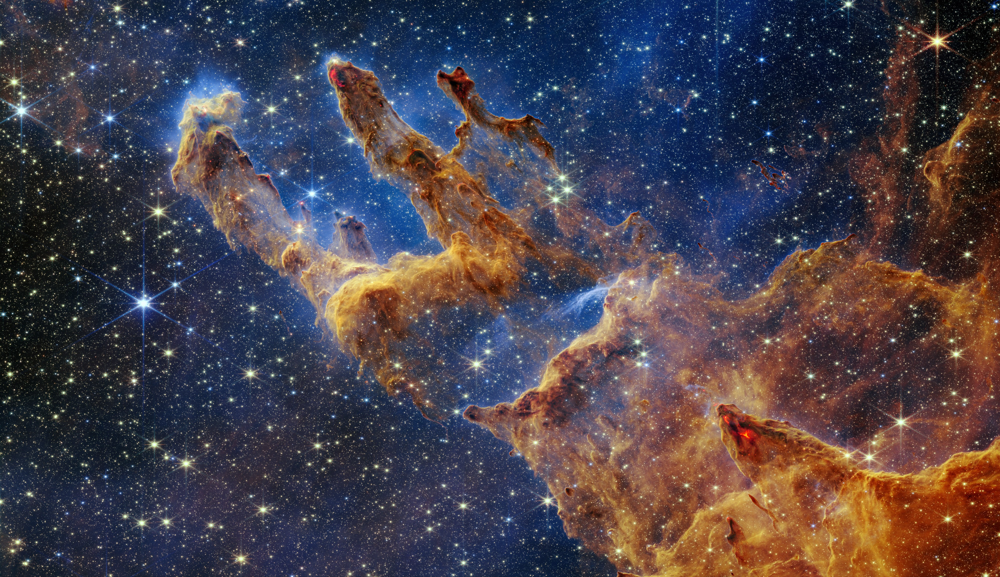

Foto astronómica del dia

Pilares de la Creación
Los Pilares de la Creación son una región icónica dentro de la Nebulosa del Águila, ubicada a unos 6,500 años luz de la Tierra en la constelación de Serpens. Esta estructura cósmica, famosa por las impresionantes imágenes capturadas por el telescopio Hubble y más recientemente por el telescopio James Webb, es esencialmente una gigantesca nube de gas y polvo interestelar donde nacen nuevas estrellas.